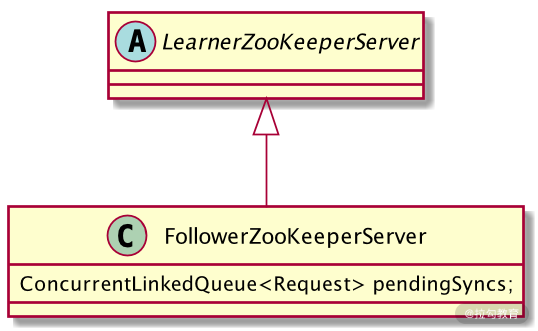
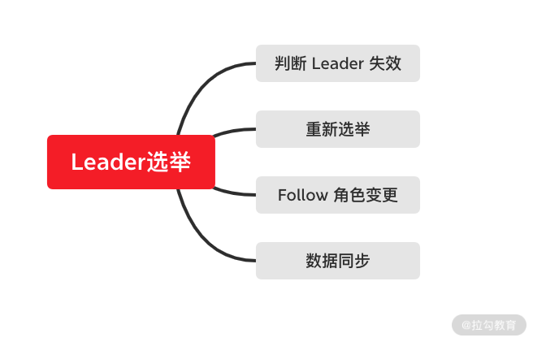
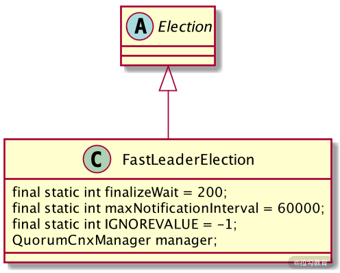

- 00 开篇词：选择 ZooKeeper，一步到位掌握分布式开发.md.html
- 01 ZooKeeper 数据模型：节点的特性与应用.md.html
- 02 发布订阅模式：如何使用 Watch 机制实现分布式通知.md.html
- 03 ACL 权限控制：如何避免未经授权的访问？.md.html
- 04 ZooKeeper 如何进行序列化？.md.html
- 05 深入分析 Jute 的底层实现原理.md.html
- 06 ZooKeeper 的网络通信协议详解.md.html
- 07 单机模式：服务器如何从初始化到对外提供服务？.md.html
- 08 集群模式：服务器如何从初始化到对外提供服务？.md.html
- 09 创建会话：避开日常开发的那些“坑”.md.html
- 10 ClientCnxn：客户端核心工作类工作原理解析.md.html
- 11 分桶策略：如何实现高效的会话管理？.md.html
- 12 服务端是如何处理一次会话请求的？.md.html
- 13 Curator：如何降低 ZooKeeper 使用的复杂性？.md.html
- 14 Leader 选举：如何保证分布式数据的一致性？.md.html
- 15 ZooKeeper 究竟是怎么选中 Leader 的？.md.html
- 16 ZooKeeper 集群中 Leader 与 Follower 的数据同步策略.md.html
- 17 集群中 Leader 的作用：事务的请求处理与调度分析.md.html
- 18 集群中 Follow 的作用：非事务请求的处理与 Leader 的选举分析.md.html
- 19 Observer 的作用与 Follow 有哪些不同？.md.html
- 20 一个运行中的 ZooKeeper 服务会产生哪些数据和文件？.md.html
- 21 ZooKeeper 分布式锁：实现和原理解析.md.html
- 22 基于 ZooKeeper 命名服务的应用：分布式 ID 生成器.md.html
- 23 使用 ZooKeeper 实现负载均衡服务器功能.md.html
- 24 ZooKeeper 在 Kafka 和 Dubbo 中的工业级实现案例分析.md.html
- 25 如何搭建一个高可用的 ZooKeeper 生产环境？.md.html
- 26 JConsole 与四字母命令：如何监控服务器上 ZooKeeper 的运行状态？.md.html
- 27 crontab 与 PurgeTxnLog：线上系统日志清理的最佳时间和方式.md.html
- 28 彻底掌握二阶段提交三阶段提交算法原理.md.html
- 29 ZAB 协议算法：崩溃恢复和消息广播.md.html
- 30 ZAB 与 Paxos 算法的联系与区别.md.html
- 31 ZooKeeper 中二阶段提交算法的实现分析.md.html
- 32 ZooKeeper 数据存储底层实现解析.md.html
- 33 结束语 分布技术发展与 ZooKeeper 应用前景.md.html
- 捐赠
18 集群中 Follow 的作用：非事务请求的处理与 Leader 的选举分析
在上节课中，我们学习了 ZooKeeper 集群中 Leader 角色服务器的作用。在 ZooKeeper 集群中，Leader 服务器主要负责处理来自客户端的事务性会话请求，并在处理完事务性会话请求后，管理和协调 ZooKeeper 集群中 Follow 和 Observer 等角色服务器的数据同步。因此，在 ZooKeeper 集群中，Leader 服务器是最为核心的服务器，一个 ZooKeeper 服务在集群模式下运行，必须存在一个 Leader 服务器。而在 ZooKeeper 集群中，是通过崩溃选举的方式来保证 ZooKeeper 集群能够一直存在一个 Leader 服务器对外提供服务的。那么在 ZooKeeper 集群选举出 Leader 的过程中，Follow 服务器又做了哪些工作？
对这些问题的研究，有助于我们掌握整个 ZooKeeper 集群服务的运行过程，清楚不同状态下服务器的处理逻辑和相关操作。使我们在日常工作中，更好地开发 ZooKeeper 相关服务，并在运维过程中快速定位问题，搭建更加高效稳定的 ZooKeeper 服务器。
非事务性请求处理过程
在 ZooKeeper 集群接收到来自客户端的请求后，会首先判断该会话请求的类型，如是否是事务性请求。所谓事务性请求，是指 ZooKeeper 服务器执行完该条会话请求后，是否会导致执行该条会话请求的服务器的数据或状态发生改变，进而导致与其他集群中的服务器出现数据不一致的情况。
这里我们以客户端发起的数据节点查询请求为例，分析一下 ZooKeeper 在处理非事务性请求时的实现过程。
当 ZooKeeper 集群接收到来自客户端发送的查询会话请求后，会将该客户端请求分配给 Follow 服务器进行处理。而在 Follow 服务器的内部，也采用了责任链的处理模式来处理来自客户端的每一个会话请求。
在第 12 课时中，我们学习了 Leader 服务器的处理链过程，分别包含预处理器阶段、Proposal 提交处理器阶段以及 final 处理器阶段。与 Leader 处理流程不同的是，在 Follow 角色服务器的处理链执行过程中，FollowerRequestProcessor 作为第一个处理器，主要负责筛选该条会话请求是否是事务性的会话请求。如果是事务性的会话请求，则转发给 Leader 服务器进行操作。如果不是事务性的会话请求，则交由 Follow 服务器处理链上的下一个处理器进行处理。
而下一个处理器是 CommitProcessor ，该处理器的作用是对来自集群中其他服务器的事务性请求和本地服务器的提交请求操作进行匹配。匹配的方式是，将本地执行的 sumbit 提交请求，与集群中其他服务器接收到的 Commit 会话请求进行匹配，匹配完成后再交由 Follow 处理链上的下一个处理器进行处理。最终，当一个客户端会话经过 Final 处理器操作后，就完成了整个 Follow 服务器的会话处理过程，并将结果响应给客户端。
底层实现
简单介绍完 ZooKeeper 集群中 Follow 服务器在处理非事务性请求的过程后，接下来我们再从代码层面分析一下底层的逻辑实现是怎样的。
从代码实现的角度讲，ZooKeeper 集群在接收到来自客户端的请求后，会将请求交给 Follow 服务器进行处理。而 Follow 服务器内部首先调用的是 FollowerZooKeeperServer 类，该类的作用是封装 Follow 服务器的属性和行为，你可以把该类当作一台 Follow 服务器的代码抽象。
如下图所示，该 FollowerZooKeeperServer 类继承了 LearnerZooKeeperServer 。在一个 FollowerZooKeeperServer 类内部，定义了一个核心的 ConcurrentLinkedQueue 类型的队列字段，用于存放接收到的会话请求。

在定义了 FollowerZooKeeperServer 类之后，在该类的 setupRequestProcessors 函数中，定义了我们之前一直反复提到的处理责任链，指定了该处理链上的各个处理器。如下面的代码所示，分别按顺序定义了起始处理器 FollowerRequestProcessor 、提交处理器 CommitProcessor、同步处理器 SendAckRequestProcessor 以及最终处理器 FinalProcessor。
protected void setupRequestProcessors() {
RequestProcessor finalProcessor = new FinalRequestProcessor(this);
commitProcessor = new CommitProcessor(finalProcessor,
Long.toString(getServerId()), true, getZooKeeperServerListener());
commitProcessor.start();
firstProcessor = new FollowerRequestProcessor(this, commitProcessor);
((FollowerRequestProcessor) firstProcessor).start();
syncProcessor = new SyncRequestProcessor(this,
new SendAckRequestProcessor((Learner)getFollower()));
syncProcessor.start();
选举过程
介绍完 Follow 服务器处理非事务性请求的过程后，接下来我们再学习一下 Follow 服务器的另一个主要的功能：在 Leader 服务器崩溃的时候，重新选举出 Leader 服务器。
ZooKeeper 集群重新选举 Leader 的过程本质上只有 Follow 服务器参与工作。而在 ZooKeeper 集群重新选举 Leader 节点的过程中，如下图所示。主要可以分为 Leader 失效发现、重新选举 Leader 、Follow 服务器角色变更、集群同步这几个步骤。

Leader 失效发现
通过之前的介绍我们知道，在 ZooKeeper 集群中，当 Leader 服务器失效时，ZooKeeper 集群会重新选举出新的 Leader 服务器。也就是说，Leader 服务器的失效会触发 ZooKeeper 开始新 Leader 服务器的选举，那么在 ZooKeeper 集群中，又是如何发现 Leader 服务器失效的呢？
这里就要介绍到 Leader 失效发现。和我们之前介绍的保持客户端活跃性的方法，它是通过客户端定期向服务器发送 Ping 请求来实现的。在 ZooKeeper 集群中，探测 Leader 服务器是否存活的方式与保持客户端活跃性的方法非常相似。首先，Follow 服务器会定期向 Leader 服务器发送 网络请求，在接收到请求后，Leader 服务器会返回响应数据包给 Follow 服务器，而在 Follow 服务器接收到 Leader 服务器的响应后，如果判断 Leader 服务器运行正常，则继续进行数据同步和服务转发等工作，反之，则进行 Leader 服务器的重新选举操作。
Leader 重新选举
当 Follow 服务器向 Leader 服务器发送状态请求包后，如果没有得到 Leader 服务器的返回信息，这时，如果是集群中个别的 Follow 服务器发现返回错误，并不会导致 ZooKeeper 集群立刻重新选举 Leader 服务器，而是将该 Follow 服务器的状态变更为 LOOKING 状态，并向网络中发起投票，当 ZooKeeper 集群中有更多的机器发起投票，最后当投票结果满足多数原则的情况下。ZooKeeper 会重新选举出 Leader 服务器。
Follow 角色变更
在 ZooKeeper 集群中，Follow 服务器作为 Leader 服务器的候选者，当被选举为 Leader 服务器之后，其在 ZooKeeper 集群中的 Follow 角色，也随之发生改变。也就是要转变为 Leader 服务器，并作为 ZooKeeper 集群中的 Leader 角色服务器对外提供服务。
集群同步数据
在 ZooKeeper 集群成功选举 Leader 服务器，并且候选 Follow 服务器的角色变更后。为避免在这期间导致的数据不一致问题，ZooKeeper 集群在对外提供服务之前，会通过 Leader 角色服务器管理同步其他角色服务器，具体的数据同步方法，我们在第14课时中已经详细的讲解过了，这里不再赘述。
底层实现
介绍完 ZooKeeper 集群重新选举 Leader 服务器的理论方法后，接下来我们再来分析代码层面上 ZooKeeper 的核心实现。
首先，ZooKeeper 集群会先判断 Leader 服务器是否失效，而判断的方式就是 Follow 服务器向 Leader 服务器发送请求包，之后 Follow 服务器接收到响应数据后，进行解析，如下面的代码所示，Follow 服务器会根据返回的数据，判断 Leader 服务器的运行状态，如果返回的是 LOOKING 关键字，表明与集群中 Leader 服务器无法正常通信。
switch (rstate) {
case 0:
ackstate = QuorumPeer.ServerState.LOOKING;
break;
case 1:
ackstate = QuorumPeer.ServerState.FOLLOWING;
break;
case 2:
ackstate = QuorumPeer.ServerState.LEADING;
break;
case 3:
ackstate = QuorumPeer.ServerState.OBSERVING;
break;
default:
continue;
之后，在 ZooKeeper 集群选举 Leader 服务器时，是通过 FastLeaderElection 类实现的。该类实现了 TCP 方式的通信连接，用于在 ZooKeeper 集群中与其他 Follow 服务器进行协调沟通。

如上图所示，FastLeaderElection 类继承了 Election 接口，定义其是用来进行选举的实现类。而在其内部，又定义了选举通信相关的一些配置参数，比如 finalizeWait 最终等待时间、最大通知间隔时间 maxNotificationInterval 等。
在选举的过程中，首先调用 ToSend 函数向 ZooKeeper 集群中的其他角色服务器发送本机的投票信息，其他服务器在接收投票信息后，会对投票信息进行有效性验证等操作，之后 ZooKeeper 集群统计投票信息，如果过半数的机器投票信息一致，则集群就重新选出新的 Leader 服务器。
static public class ToSend {
static enum mType {crequest, challenge, notification, ack}
ToSend(mType type,
long leader,
long zxid,
long electionEpoch,
ServerState state,
long sid,
long peerEpoch,
byte[] configData) {
this.leader = leader;
this.zxid = zxid;
this.electionEpoch = electionEpoch;
this.state = state;
this.sid = sid;
this.peerEpoch = peerEpoch;
this.configData = configData;
}
结束
通过本课时的学习，我们知道在 ZooKeeper 集群中 Follow 服务器的功能和作用。Follow 服务器在 ZooKeeper 集群服务运行的过程中，负责处理来自客户端的查询等非事务性的请求操作。当 ZooKeeper 集群中旧的 Leader 服务器失效时，作为投票者重新选举出新的 Leader 服务器。
这里我们要注意一个问题，那就是在重新选举 Leader 服务器的过程中，ZooKeeper 集群理论上是无法进行事务性的请求处理的。因此，发送到 ZooKeeper 集群中的事务性会话会被挂起，暂时不执行，等到选举出新的 Leader 服务器后再进行操作。
© 2019 - 2023 Liangliang Lee. Powered by gin and hexo-theme-book.